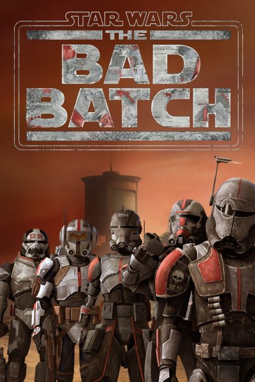
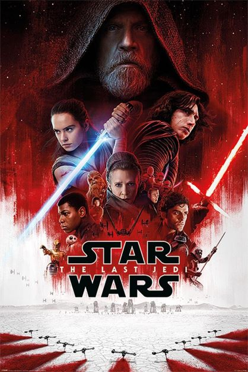

O início da cronologia do universo de
Star Wars ganhou um novo marco zero com
a nova série de animação Histórias Jedi.
Os quatro primeiros episódios narram
eventos que se passam antes
de A Ameaça Fantasma, como o nascimento de
Ahsoka, a época em que Qui-Gon Jinn
era aprendiz do Conde Dooku, a ascensão do
mestre Windu ao Conselho Jedi, chegando até o
encontro de Qui-Gon com Darth Maul e
a morte do mestre Jedi, alcançando os
eventos do Episódio I.
2. Episódio I: A Ameaça Fantasma
No primeiro filme da franquia em termos de cronologia, Obi-Wan Kenobi
e seu mestre Jedi Qui-Gon Jinn conhecem a Rainha Padmé Amidala e o jovem Anakin Skywalker. Esqueça o papo do
s midi-chlorians e a existência do Jar Jar Binks e conseguimos ter um filme com acontecimentos importantes para
a saga: conhecemos C-3PO e R2-D2, ficamos sabendo da existência dos Sith,
Qui-Gon enfrenta Darth Maul e Palpatine se torna Chanceler Supremo da República
Galática, abrindo seu caminho para o Império.
3. Episódio II: Ataque dos Clones
Dez anos se passaram desde o primeiro filme e somos apresentados
a um Anakin Skywalker crescido e bem interessado em Padmé, que parece não ter envelhecido nada (o que colocam na água em Naboo?).
O romance dos dois já evolui para casamento ao mesmo tempo em que o Conde Dooku, um secreto Lorde Sith, tenta liderar
planetas separatistas da República. Enquanto isso, a Guerra dos Clones funciona como uma desculpa para dar poderes emergenciais
a Palpatine. É neste filme que Anakin descobre sobre a morte de sua mãe, abrindo caminho para o Lado Negro.
4. A Guerra dos Clones
Ambientado na mesma época dos episódios II e III, este longa de animação se
concentra mais nos eventos da Guerra dos Clones, como o próprio nome diz. A trama expande os eventos do conflito entre a
República e os Separatistas, com um roteiro em que a Ordem Jedi é culpabilizada pelo sequestro do filho de Jabba the Hutt.
Nesta animação conhecemos a padawan de Anakin: Ahsoka Tano.
5. The Clone Wars – série de animação
Também ambientada durante a Guerra dos Clones, esta série de animação
tenta preencher algumas lacunas não explicadas na trilogia da Era da República. Em seis temporadas, os episódios
conseguem aprofundar os conflitos da República e dos Separatistas, abordando os casos de corrupção no Senado e na
Ordem Jedi. É nesta série que Yoda aprende a utilizar a Força para reaparecer como fantasma.
6. Episódio III: A Vingança dos Sith
Apenas três anos após os eventos do Episódio II, a Guerra chega
a seu ponto crucial. Influenciado por Palpatine e assustado com visões de Padmé morrendo, Anakin sucumbe mais
profundamente ao Lado Negro. Um ultimato contra a Ordem Jedi, com a ajuda do próprio Anakin, força Obi-Wan e Yoda
a se esconderem. É neste filme que Padmé dá à luz Luke e Leia e então morre (de desgosto, a gente imagina).
Para fechar a Era da República, o Império é criado e Anakin se torna Darth Vader.
7. Star Wars: Histórias Jedi – episódios 5 e 6
Esses dois episódios da série de animação pulam bastante
na cronologia de Star Wars, mas de modo geral estão ambientados durante a Guerra dos Clones, contemplando
desde treinamento de Ahsoka no Templo Jedi até o período em que ela precisou se esconder por causa da Ordem 66,
após o término da Guerra.
8. The Bad Batch – série de animação

A série de lançada pelo Disney+ se passa logo
após o fim do ‘Episódio III’, nos primeiros anos do Império. A história segue clones de elite
e experimentais, “Os Malfeitos” (introduzidos pela primeira vez em ‘A Guerra dos Clones’), um
esquadrão único de clones que variam geneticamente de seus irmãos – cada um com uma habilidade
excepcional e singular que os torna soldados extraordinariamente eficazes e uma tripulação formidável.
A Era do Império/Rebelião
9. Han Solo: Uma história Star Wars
Como este spin-off se encaixa entre a ascensão do Império
e o início das atividades da Aliança Rebelde, ele já pode ser encaixado na Era da Rebelião.
O filme de Han Solo dá um pouco mais de contexto ao contrabandista mais querido da galáxia,
apresentando ao público seu passado com Lando Calrissian e também o início de sua amizade com Chewbacca.
10. Obi-Wan Kenobi
A série Obi-Wan Kenobi começa começa 10 anos após os
dramáticos eventos de Star Wars: A Vingança dos Sith, onde Kenobi enfrentou sua maior derrota.
Os eventos de Han Solo: Uma história Star Wars acabaram de acontecer e o jovem contrabandista
fez amizade com Chewbacca, com quem está voando pelo espaço na Millennium Falcon, trapaceando
e contrabandeando para sobreviver. Os Jedis estão sendo perseguidos pelo Império e Obi-Wan precisa
se esconder no planeta Tatooine, onde Luke Skywalker — um dos filhos de Anakin — também está escondido.
Para não ser descoberto pelo Império, Obi-Wan não usa os poderes da força e abandona o sabre de luz.
11. Star Wars Rebels
Os primeiros passos da Aliança Rebelde são apresentados nesta série de animação,
que foi produzida entre 2014 e 2018. Além de apresentar ao público diversos personagens originais, alguns rostos familiares
marcam presença, como Leia, Obi-Wan, Lando, Darth Maul e Mon Mothma. A série termina logo antes da batalha entre o Império
e a Rebelião começar a esquentar.
12. Andor
A nova série do universo de Star Wars se passa cinco anos antes dos eventos de
Rogue One. O enredo acompanha um grupo de personagens na época em que a Aliança Rebelde está formando uma oposição ao Império.
No centro da aventura está Cassian Andor (Diego Luna), um bandido que se torna um revolucionário e se junta à rebelião.
13. Rogue One: Uma história Star Wars
Este spin-off funciona praticamente como um prólogo para Uma Nova Esperança.
Concebido como um filme de guerra, Rogue One se concentra na tentativa para roubar os planos de construção da Estrela da Morte,
resultando na destruição quase total da frota da Aliança Rebelde.
14. Episódio IV: Uma Nova Esperança
Pois é, o primeiro filme de Star Wars no nosso universo é
na verdade o 9º item da cronologia. Por causa de um pedido de socorro enviado pela Princesa Leia, Luke Skywalker
embarca em sua grande aventura, com mentoria de ninguém menos do que Obi-Wan Kenobi. Com a ajuda de Han Solo e Chewbacca,
eles enfrentam Darth Vader, Luke começa a aprender sobre a Força e a Estrela da Morte destrói Alderaan (para depois ser
destruída pela Aliança Rebelde).
15. Episódio V: O Império Contra-Ataca
A sequência penetra de forma mais sombria no universo de George Lucas,
apresentando novos personagens e dramas familiares. Luke começa a treinar com Yoda enquanto Leia e Han Solo buscam refúgio
com Lando, somente para cair numa emboscada de Darth Vader. Um dos plot twists mais famosos da história é revelado. Luke é filho de Darth Vader.
16. Episódio VI: O Retorno do Jedi
O último filme desta trilogia inicia com o resgate de Han Solo, que ficou aprisionado por Jabba the
Hutt no filme anterior. Feito isso, a Rebelião volta ao trabalho de tentar impedir o Império de construir uma segunda Estrela da Morte. Darth Vader
e o Império tentam persuadir Luke a migrar para o Lado Negro. O filme marca o fim do Império e da Era da Rebelião. Ah! Também é neste filme que descobrimos
que dois personagens são irmãos.
A Era da Resistência
17. The Mandalorian
Lançada pelo Disney+, a série é ambientada após a queda do Império e antes da ascensão da Primeira Ordem.
Então na verdade ela fica numa espécie de limbo entre a Era da Rebelião e a da Resistência. A série apresenta os contratempos de um pistoleiro que vive
nos confins da galáxia, longe da autoridade da Nova República. Quase como um faroeste, só que no universo de Star Wars. É também a série que está causando
surtos no mundo inteiro por apresentar o personagem Baby Yoda — o auge da fofura.
18. O Livro de Boba Fett
Um spin-off de ‘Mandaloriano’, a série apresenta o caçador de recompensas Boba Fett
(Temuera Morrison) em suas aventuras pela galáxia. A série estreou em dezembro de 2021 no Disney+.
19. Star Wars: Resistance
Esta continuação de Star Wars Rebels é
ambientada seis meses antes dos eventos de O Despertar da Força. Como uma das fundadoras da Nova República,
a agora General Leia começa a entender a ameaça da Primeira Ordem para a galáxia. A animação também conta com
alguns rostos familiares da nova trilogia, como Poe Dameron e a Capitã Phasma.
20. Episódio VII: O Despertar da Força
Trinta anos após O Retorno de Jedi, a nova Resistência, liderada pela General Leia,
enfrenta os resquícios do Império, mantidos pelo Supremo Líder Snoke, também conhecidos como a Primeira Ordem. Paralelamente,
um ex-stormtrooper faz amizade com Rey, uma mulher com passado desconhecido. Eles logo se juntam a Han, Chewie e Leia para ajudá-los
a eliminar uma nova arma destruidora de planetas. Como se tudo isso não fosse suficiente, Kylo Ren, filho de Han e Leia, está do lado
errado da história. Rey descobre alguns poderes relacionados à Força e tenta encontrar um solitário Luke Skywalker.
21. Episódio VIII: Os últimos Jedi

Este filme explora os eventos que ocorrem logo após o fim de O Despertar da Força.
A Resistência está com poucos recursos para escapar da Primeira Ordem. Enquanto isso, Rey aprende o que pode com um relutante Luke
Skywalker que tenta convencê-la que a Ordem Jedi está acabada e que ele não poderá ajudar a Resistência. Além disso, Rey mostra alguma
conexão estranha com Kylo Ren e tenta fazê-lo abandonar o Lado Negro, mas ele acaba enfrentando seus dois mestres: Snoke e Luke. O filme
termina com um grande desafio para Rey: liderar os Jedi em uma nova era e reunir os sobreviventes da Resistência.
22. Episódio IX: A Ascensão Skywalker
O último filme de Star Wars se passa um ano depois de onde a história parou.
A Resistência está tendo dificuldades em juntar forças contra a Primeira Ordem de Kylo Ren. Além disso, há a expectativa de
que o espectro de um antigo inimigo reacenda a velha batalha entre Jedi e Sith, que deve chegar a uma conclusão definitiva.